From time to time, you will see an Admin panel notice alerting you about available updates. In this section, you will learn how to install the updated files via FTP and via Filezilla.
THEME UPDATE ALERT - Whenever we update our theme files, we will send an alert through your WP Admin panel. In this example, you see an alert for an update to the Bazar Child theme. **Note – there is also a second update alert here, which probably means that one of your plugins has an update available.
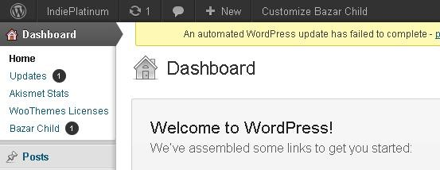
YOU CAN GET TO YOUR UPDATE SCREEN BY CLICKING ON “BAZAR CHILD” OR BY GOING TO YOUR LEFT SIDEBAR AND CLICKING ON “THEMES.”
On the “Themes” Panel, a yellow bar will say “A new version of the Bazar Child is available for download.”
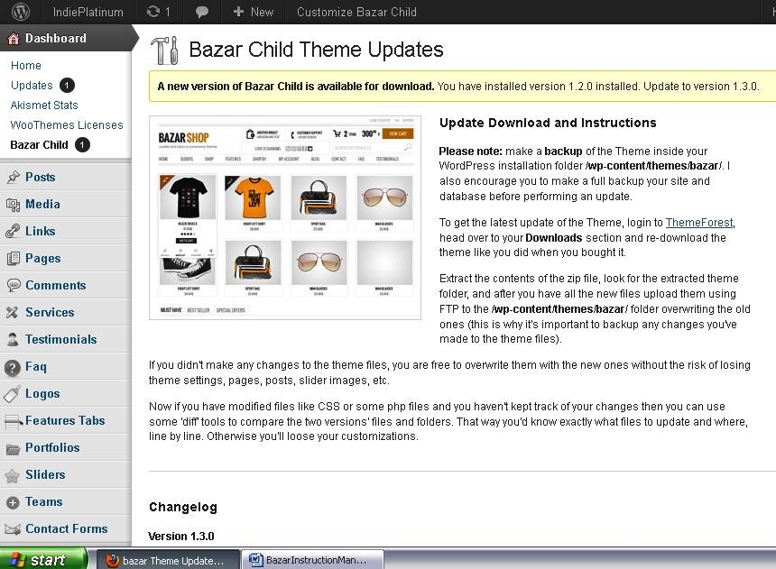
Read the “Update Download” instructions carefully, then
BACKUP YOUR FILES! This is the safest thing you can do whenever you are updating your files. There are many plugins for backing up your files. Just go to Wordpress Plugins and experiment with a few. One suggestion is the plugin called XCloner.
Now go to your Themeforest account and download the updated files to your computer desktop.
Complete all the CHILD THEME steps of this manual to update your child theme.
Updating Via Filezilla - Now you will learn how to update your files using the Filezilla client.
First, BACKUP YOUR FILES! This is always the safest thing to do.
Next, download and install the Filezilla Client - http://filezilla-project.org/
Now OPEN FILEZILLA to see this window:
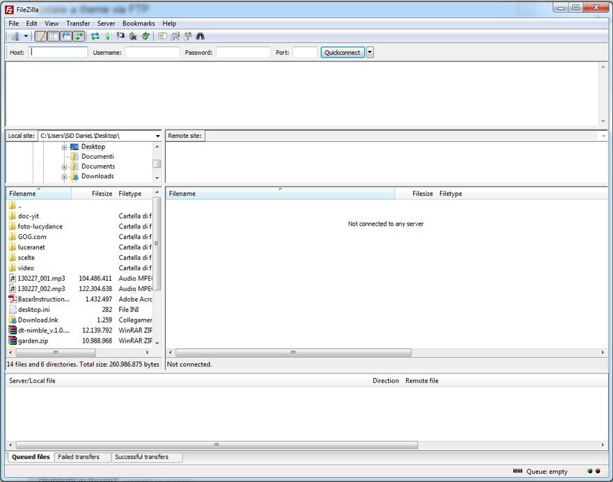
Fill in your FTP Credentials, like in the image shown below:
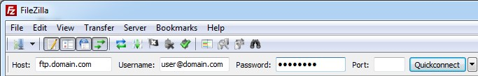
Now “CLICK QUICKCONNECT” and Filezilla will load your website. Here is how it will look:
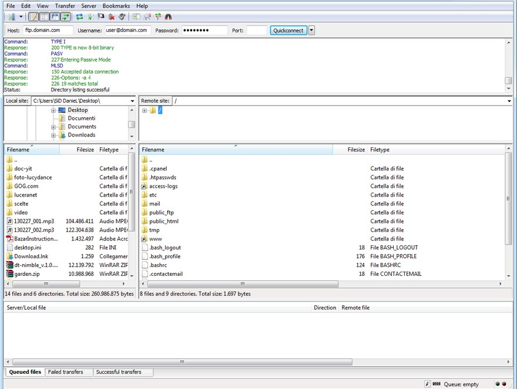
Now use the right side panel to navigate to your themes folder. In the example above, the theme folder is public_html/wp-content/themes/, however, not all web hosting have public_html, it may be something different in your server.
After your themes/ folder is open, use the left side panel to navigate to the place where you have extracted the theme folder. In this example, the extracted theme folder is on the desktop.
Drag the extracted theme folder into your web hosting:
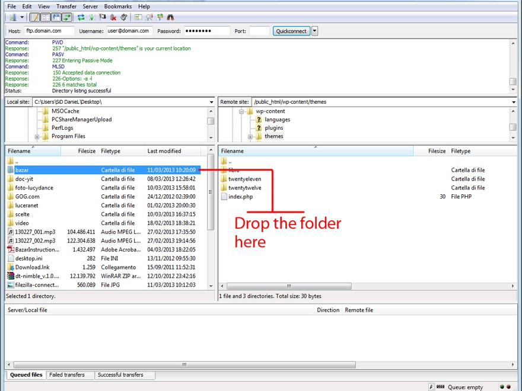
**Note – you may be asked if you want to overwrite files and/or folder. Tick the option to "Always use this action" and click on "Ok.” Then wait until all files are uploaded.
That's all there is to it!
But wait! Using this updating method will overwrite all your custom code. If you edited some files, your changes will be lost.
If you do not want to lose any changes, do not follow the last step of dropping the entire folder. Just follow the steps below.
UPDATING YOUR REGULAR THEME FILES VIA FTP – You can also upload the files via FTP. If you need a refresher course on how to get to your FTP files, please go to Step One, Installing the Bazar Shop Files.
In the meantime, download the Themeforest files to your desktop…
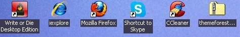
DOUBLE-CLICK to find the Bazar_Wordpress_Theme file…
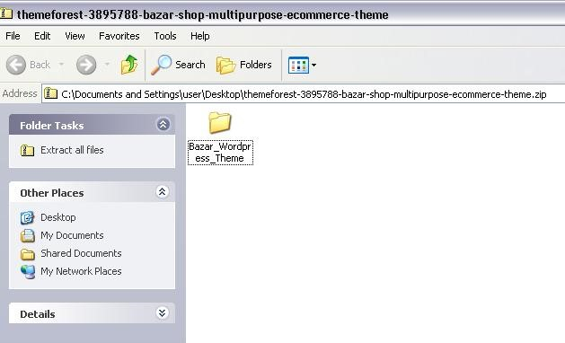
DOUBLE CLICK to find the “Bazar” zip file…
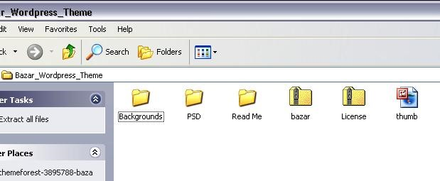
DOUBLE CLICK on the Bazar zip file to find the “Bazar” folder.
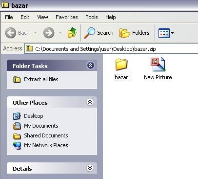
DRAG THE BAZAR FOLDER TO YOUR DESKTOP. Then open your FTP files and navigate to the folder you have designated for your Bazar Shop. Open that folder and find WP-Admin, WP-Content, WP-Includes…
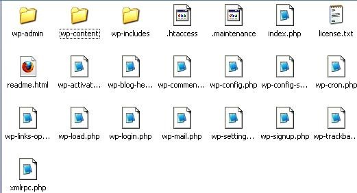
DOUBLE CLICK on Wp-Content…

DRAG YOUR “BAZAR” FOLDER from your desktop to this FTP folder.
**WARNING – Do not drag your Bazar folder inside of any of the folders. IT MUST STAND ALONE!
OF COURSE, SINCE THERE IS ALREADY A BAZAR FOLDER IN YOUR FTP FILES, you will quickly receive an alert asking whether you’re sure you want to replace it. Click “YES ALL” to replace the files.
Once the folder has finished uploading/replacing, it will momentary look as if you have two Bazar file folders, but don’t worry; this is only because you haven’t refreshed yet.
There is actually no need to refresh. That will happen automatically, once you close the folder.
Remember to CLOSE YOUR TWO FTP WINDOWS, then navigate back to your “Themes” window on your WP Admin panel. The “Update” alert should be gone, and you should have the most current files.
And now you’re finished and ready for STEP 10!